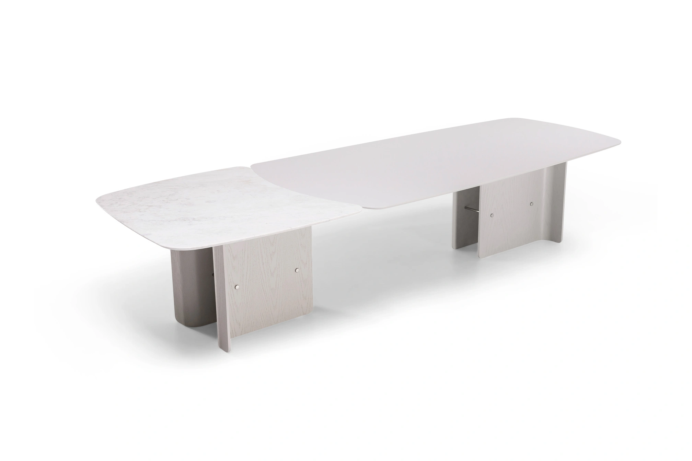

Tampo Bipartido Carlota.
Tampo bipartido monumental com detalhe exclusivo em pedra natural (Mármore Calacata, Nero ou Travertino Romano). Medidas de 2,60 x 1,20 m até 4,00 x 1,30 m.
Consultar disponibilidade

Ficha Técnica
Especificações & Estrutura
Peça
Tampo Bipartido Carlota
Pedra Natural
Mármore Calacata, Mármore Nero ou Travertino Romano